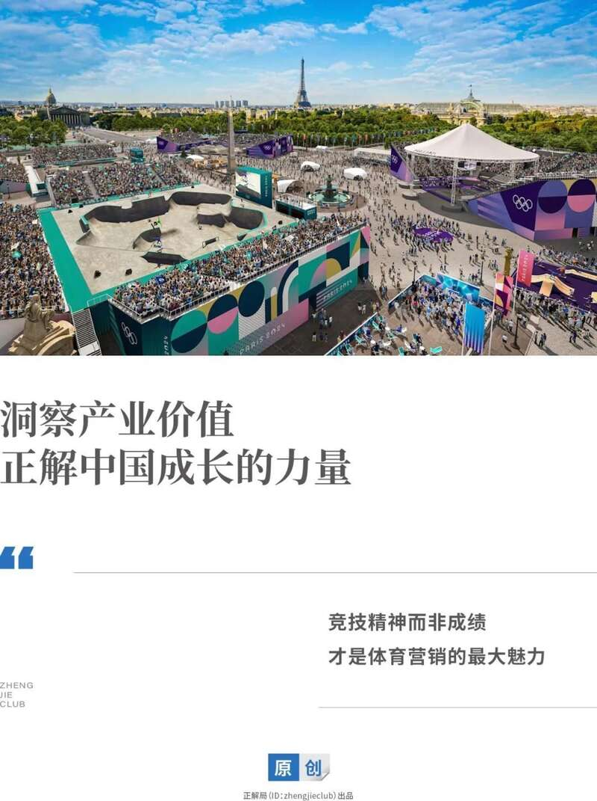
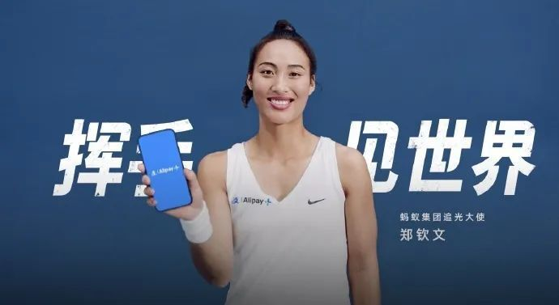
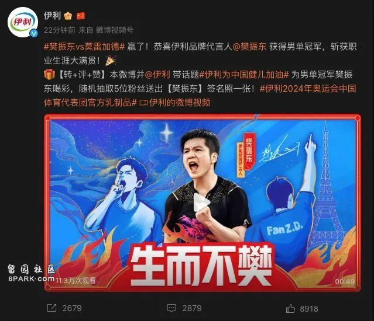
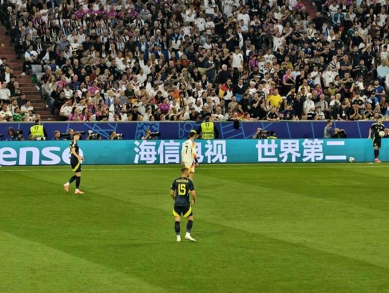
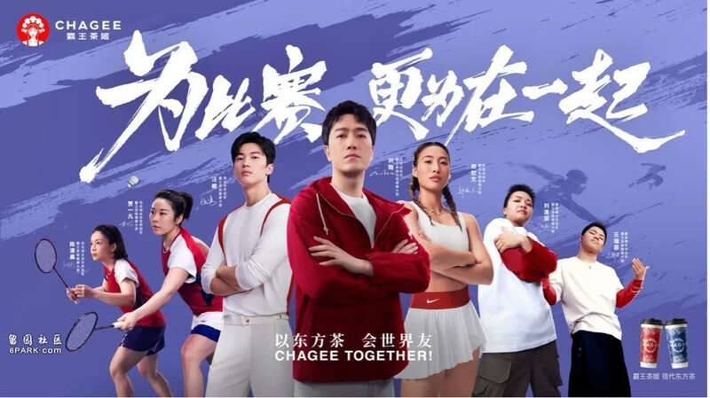
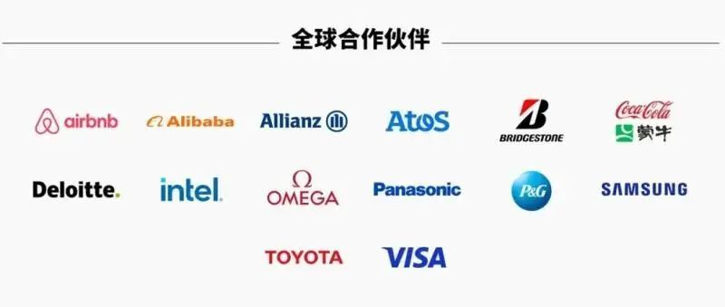
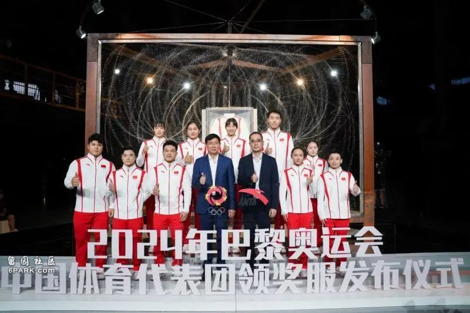
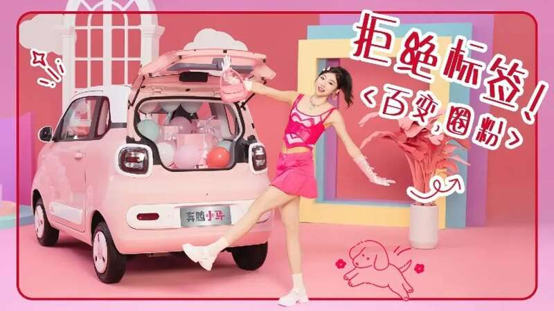

巴黎奥运会，运动员在竞技，品牌赞助商在豪赌。
在比赛之前，很多企业已经签约奥运运动员作为品牌代言人。
每一个企业都希望自家的代言人，能够在巴黎奥运会上勇夺冠军、一鸣惊人。
这是一场豪赌。
既考验运动员的竞技水平，更考验企业的商业眼光。
8月3日，郑钦文在网球女子单打决赛中，以2：0击败对手，获得女子网球单打冠军。
这是中国网球第一块奥运单打金牌，创造了亚洲最高纪录。
郑钦文打赢了，赞助商们赌赢了。
有媒体统计，截至目前，郑钦文至少手握10个品牌赞助。
值得注意的是，这些品牌赞助，都是在巴黎奥运会举办前签订的。
在巴黎奥运会之前，郑钦文虽然已经在网球界崭露头角，但是，因为没有桂冠加身，国民知名度并不高。
回顾奥运赛程，郑钦文先后遭遇前世界第一、大满贯冠军科贝尔，现任世界第一、奥运头号选手斯瓦泰克。
上演“过山车”逆转，才拿下奥运冠军。
可以说，郑钦文赢得很艰难，赞助商们赢得很惊险。
特别是，早在2022年8月，蚂蚁集团就聘请郑钦文为“追光大使”，在之后的比赛中，支付宝的标识出现在了郑钦文的球衣上。

蚂蚁集团聘请郑钦文为“追光大使”
彼时，郑钦文闯入2022年法国网球公开赛女单第三轮，刚刚崭露头角。
蚂蚁集团的眼光，确实独到。
相对于网球，押注乒乓球运动员，胜率就大多了。
为了万无一失，伊利更是“两边下注”，同时聘请王楚钦、樊振东为品牌代言人。
王楚钦、樊振东是我国男子乒乓球的双子座。
王楚钦世界排名第一，人气也高，但缺少经验。
樊振东排位在王楚钦之后，但比赛经验更丰富。
“两边下注”更有保障。
果不其然，比赛中，王楚钦爆冷出局，樊振东不负众望拿下冠军。

伊利押中樊振东
恭喜伊利，押中奥运冠军一名。
一些新兴的比赛项目和运动员，也引起了企业的关注。
霹雳舞，这个始于20世纪70年代美国纽约街头的运动，今年正式成为了巴黎奥运会的比赛项目。
作为中国队最有希望冲金的选手，刘清漪已经拿下了不少代言合同。
茶饮品牌霸王茶姬，签约刘清漪为“健康大使”。
如果刘清漪在奥运会上拿到冠军，必将一鸣惊人，赞助商也将获得丰厚的回报。
胜负如何，坐等开盘。
企业押注奥运冠军的背后，是火爆的体育营销。
请运动员拍广告或做代言人，本质上是一种注意力经济。
即借助运动员，先获取消费者的注意力，再将其转化为消费的动力，最终赢得商业利益。
体育跨越语言、种族、文化，是全人类的共同活动，顶级体育赛事更是吸引全球的目光。
2024年，又是“体育大年”，足球盛会欧洲杯前脚落幕，巴黎奥运会又激战正酣。
正解局在《砸钱欧洲杯，中国企业获得了什么？》一文中分析过，2024欧洲杯共有13个最高级别官方赞助商。（点击标题即可阅读）
其中，5家来自中国，分别是海信、蚂蚁集团、vivo、比亚迪和速卖通。
海信更是从2016年就开始赞助欧洲杯，成为欧洲杯56年历史上第一个来自中国的赞助商。

海信电视广告亮相欧洲杯赛场
大手笔砸钱，中国企业看中的是欧洲杯的影响力。今年，欧洲杯在全球吸引了超过50亿人次观赛。
相比欧洲杯，奥运会在中国关注度更高，奥运冠军更是备受关注的焦点。
赞助奥运冠军，则是各大品牌体育营销的核心。
但是，奥运冠军，毕竟是有限的。
顶尖的奥运冠军，更是稀缺。
正解局还注意到，以前，只有家电、乳饮、运动服饰等关联性较大的行业品牌参与体育营销，现在，茶饮、珠宝、金融、汽车等各大行业都加入进来。

茶饮品牌霸王茶姬的体育运动员代言人
这让本就稀缺的顶尖奥运冠军，更显得“僧多肉少”。
为了争夺奥运冠军，很多品牌提前下手，在运动员成名之前抢先签约。
这样做，可以在竞争对手较少的情况下以较低的价格拿下赞助。
以郑钦文为例，夺取奥运冠军后，热度爆表，直接晋级为国际体坛巨星。
相对应的是，商业价值也水涨船高。
目前，郑钦文在奥运网球赛场的成绩已超越李娜，广告收入也极有可能超越李娜。
要知道，巅峰时期的李娜，年收入高达1.4亿元，多次跻身《福布斯》年度世界女运动员收入榜前三。
如果品牌此时再去赞助郑钦文，那么，要掏的钱绝不是一个小数目。
有媒体预计，夺冠之后，郑钦文的代言费一夜之间至少上涨3倍。
像蚂蚁集团这样提前押注，费用自然就要低多了。
这是一次漂亮的营销，也是一笔成功的投资。
体育竞技的魅力之一，就在于不确定性。
押注奥运冠军，风险是不可避免的。
分享奥运会带来的流量红利，企业还有更稳妥的赞助方式。
一是赞助赛事，成为奥委会的合作伙伴/赞助商。
2024年巴黎奥运官方网站披露，这次巴黎奥运会的赞助收入为12.26亿欧元，官方合作伙伴分为全球合作伙伴（15家）、高级合作伙伴（7家）、官方合作伙伴（13家）、官方赞助商（44家）四大类别，共计79家企业成为官方赞助商。
中国企业阿里巴巴和蒙牛，成为全球合作伙伴。

2024年巴黎奥运会全球合作伙伴
二是赞助团队，成为国家队的合作伙伴。
比如安踏，是中国奥运代表团官方合作伙伴，设计了中国国家队领奖服。
所有登台的中国运动员都将身穿安踏的领奖鞋服，为安踏带来巨大的曝光和流量。
此外，安踏还赞助了体操队、举重队、游泳队等共9支国家队的比赛装备。
这些大多是我国的优势项目，为安踏带来的品牌曝光度，也是可预期的。

安踏设计了中国国家队领奖服
从营销的角度看，赞助赛事也好，选择运动员作代言也罢，能否达到预期的宣传效果，关键要看运动员/运动项目与品牌理念的契合度。
这种契合度，可以称之为“合拍”，即代言人的公众形象与品牌调性一致，能够有效地传达品牌的价值和内涵，从而增强品牌的市场影响力。
蚂蚁集团坚定地押注郑钦文，一个重要的原因便是看中了郑钦文身上的国际范儿。
早在2013年，蚂蚁集团的支付宝便走出国门。
2016年，蚂蚁集团将全球化列为重大战略之一。
2020年，蚂蚁集团首次推出Alipay+，为全球的电子钱包用户提供便捷的跨境支付服务。
数据显示，Alipay+已覆盖全球超过250万商户，连接全球用户超10亿。
加速全球布局的蚂蚁集团，希望找一位国际化的代言人，向世界传递全球化的理念与形象。
网球是高度国际化的运动项目，郑钦文身上展现的自信表达、不服输的精神更是在海外圈粉无数。
蚂蚁集团与郑钦文，完美契合。
又如奔腾小马，这是一汽奔腾出品的一款纯电小车，主要为25岁-35岁的青年女性和年轻宝妈而设计。
奔腾小马看中田径运动员吴艳妮身上个性张扬、自信直率的特质，聘请其为代言人。

奔腾小马聘请吴艳妮为代言人
退一步说，假设企业押错了运动员，营销就一定失败了吗？
正解局认为，不一定。
这是因为，企业赞助运动员，是希望借助运动员的形象影响受众。
对于受众来说，运动员的成绩固然重要，竞技精神更重要。
在奥运赛场上，运动员只要敢于拼搏、永不服输，即使拿不到冠军，也能赢得尊重。
竞技精神而非成绩，才是体育营销的最大魅力。